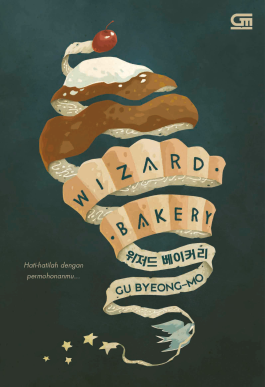

Review Saya

<
1
2
3
4
>
--- Wizard Bakery --- Beautiful book. Cocok untuk yang suka Bliss Bakery dan keajaiban toko Kelontong Namiya. Cerita yang ringan dan penuh makna yang membuat aku terpukau di setiap halamannya. Sedih banget sama apa yang harus dilalui anak laki-laki tokoh utamanya, hidupnya sulit sejak dia kecil. But at least, dia bisa menanggung semua masalahnya. Aku seneng banget dia bisa ketemu Tukang Roti dan Burung Biru, akhirnya bisa belajar bagaimana rasanya mencintai dan dicintai oleh keluarga yang sesungguhnya. Plot twist kecil di akhir cerita membuat aku puas karena dari awal udah nebak siapa yang jahat, dan akhirnya terungkap. Novel ini diakhiri dengan dua alternatif, sehingga kita ga penasaran setelah menyelesaikan novel ini.